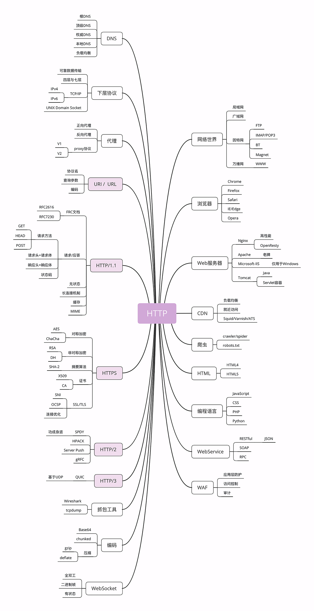
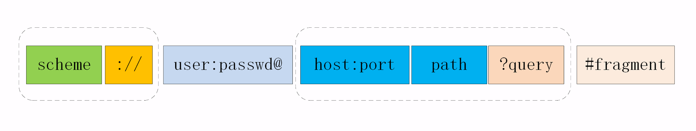

学习备注
- 好需要好好熟悉3次握手、四次挥手
- 需要对头字段进行整理
- 各种方法详解需要熟悉（熟悉自定义方法？）
- 安全幂等需要熟悉
HTTP发展史（来龙去脉）
来源
1989 年，蒂姆·伯纳斯 - 李（Tim Berners-Lee）发表了一篇论文，提出了在互联网上构建超链接文档系统的构想。这篇论文中他确立了三项关键技术。
- URI：统一资源标识符，作为互联网上资源的唯一身份；
- HTML：即超文本标记语言，描述超文本文档；
- HTTP：即超文本传输协议，用来传输超文本。
HTTP/0.9
20 世纪 90 年代初期发布。
只允许用“GET”动作从服务器上获取 HTML 文档，并且在响应请求之后立即关闭连接
HTTP/1.0
1996 年正式发布（确立了大部分现在使用的技术，但它不是正式标准）
- 增加了 HEAD、POST 等新方法；
- 增加了响应状态码，标记可能的错误原因；
- 引入了协议版本号概念；
- 引入了 HTTP Header（头部）的概念，让 HTTP 处理请求和响应更加灵活；
- 传输的数据不再仅限于文本。
HTTP/1.1
1999 年，HTTP/1.1 发布了 RFC 文档，编号为 2616（它是一个“正式的标准”）
- 增加了 PUT、DELETE 等新的方法；
- 增加了缓存管理和控制；
- 明确了连接管理，允许持久连接；
- 允许响应数据分块（chunked），利于传输大文件；
- 强制要求 Host 头，让互联网主机托管成为可能。
HTTP/2
- 连接慢，无法跟上迅猛发展的互联网
- 2015 年发布了 HTTP/2，RFC 编号 7540
- HTTP/2 基于 Google 的 SPDY 协议，注重性能改善，但还未普及（Google 顺势把 SPDY 推上了标准的宝座，互联网标准化组织以 SPDY 为基础开始制定新版本的 HTTP 协议）
- HTTP/2 的制定充分考虑了现今互联网的现状：宽带、移动、不安全，在高度兼容 HTTP/1.1 的同时在性能改善方面做了很大努力，主要的特点有：
- 二进制协议，不再是纯文本；
- 可发起多个请求，废弃了 1.1 里的管道；
- 使用专用算法压缩头部，减少数据传输量；
- 允许服务器主动向客户端推送数据；
- 增强了安全性，“事实上”要求加密通信。
HTTP/3
- Google 又发明了一个新的协议，叫做 QUIC。
- 2018 年，互联网标准化组织 IETF 提议将“HTTP over QUIC”更名为“HTTP/3”并获得批准，HTTP/3 正式进入了标准化制订阶段
- HTTP/3 基于 Google 的 QUIC 协议，是将来的发展方向
HTTP概念
HTTP（HyperText Transfer Protocol）超文本传输协议
- 协议
协：必须要有两个或多个参与者
议：对参与者的一种行为约定和规范
- 传输
发起传输动作的叫做请求方
后接到传输的叫做应答方或者响应方
- 超文本
HTTP眼里的“文本”：图片、音频、视频、甚至是压缩包
超文本：“超越了普通文本的文本”，它是文字、图片、音频和视频等的混合体，最关键的是含有“超链接”
HTTP 是什么？
HTTP 是一个在计算机世界里专门在两点之间传输文字、图片、音频、视频等超文本数据的约定和规范- HTTP 不是一个孤立的协议
HTTP 通常跑在 TCP/IP 协议栈之上，依靠 IP 协议实现寻址和路由、TCP 协议实现可靠数据传输、DNS 协议实现域名查找、SSL/TLS 协议实现安全通信。此外，还有一些协议依赖于 HTTP，例如 WebSocket、HTTPDNS 等。这些协议相互交织，构成了一个协议网，而 HTTP 则处于中心地位
- HTTP 协议基于底层的 TCP/IP 协议，所以必须要用 IP 地址建立连接
HTTP知识地图

与HTTP相关的各种概念
网络世界
- 实际的互联网是由许许多多个规模略小的网络连接而成的
这些“小网络”可能是:只有几百台电脑的局域网，可能是有几万、几十万台电脑的广域网，可能是用电缆、光纤构成的固定网络，也可能是用基站、热点构成的移动网络……
互联网的正式名称是 Internet
互联网的一个子集“万维网”（World Wide Web）(即：我们通常所说的“上网”)
它基于 HTTP 协议，传输 HTML 等超文本资源，能力也就被限制在 HTTP 协议之内
- 万维网之外的资源
电子邮件、BT 和 Magnet 点对点下载、FTP 文件下载、SSH 安全登录、各种即时通信服务等等
- 互联网上绝大部分资源都使用 HTTP 协议传输
浏览器（Web Browser）
检索、查看互联网上网页资源的应用程序，名字里的 Web，指“World Wide Web”（万维网）
本质上是一个 HTTP 协议中的请求方，使用 HTTP 协议获取网络上的各种资源
集成了很多额外的功能：HTML 排版引擎用来展示页面，JavaScript 引擎用来实现动态化效果，甚至还有开发者工具用来调试网页，以及五花八门的各种插件和扩展
HTTP 协议里，浏览器的角色被称为“User Agent”即“用户代理”，意思是作为访问者的“代理”来发起 HTTP 请求
- Linux上的wget、curl等命令工具基于HTTP，也是一种user agent
Web 服务器（Web Server）
- HTTP 协议里响应请求的主体
- 两个层面的含义：硬件和软件
硬件
硬件含义就是物理形式或“云”形式的机器，在大多数情况下它可能不是一台服务器，而是利用反向代理、负载均衡等技术组成的庞大集群。但从外界看来，它仍然表现为一台机器，但这个形象是“虚拟的”。
软件
提供 Web 服务的应用程序，通常会运行在硬件含义的服务器上。它利用强大的硬件能力响应海量的客户端 HTTP 请求，处理磁盘上的网页、图片等静态文件，或者把请求转发给后面的 Tomcat、Node.js 等业务应用，返回动态的信息。
- 常见Web Server
Apache
Nginx：Web 服务器里的后起之秀，特点是高性能、高稳定，且易于扩展
Windows 上的 IIS、Java 的 Jetty/Tomcat 等
CDN（Content Delivery Network）
- CDN：Content Delivery Network（内容分发网络）
应用了 HTTP 协议里的缓存和代理技术，代替源站响应客户端的请求
CDN 位于浏览器和服务器之间
CDN 的好处：缓存源站的数据
除去网络加速外，还提供负载均衡、安全防护、边缘计算、跨运营商网络等功能，能够成倍地“放大”源站服务器的服务能力，很多云服务商都把 CDN 作为产品的一部分
爬虫（Crawler）
一种可以自动访问 Web 资源的应用程序
爬虫来源？
绝大多数是由各大搜索引擎“放”出来的，抓取网页存入庞大的数据库，再建立关键字索引，这样我们才能够在搜索引擎中快速地搜索到互联网角落里的页面
- 爬虫不好的一面
它会过度消耗网络资源，占用服务器和带宽，影响网站对真实数据的分析，甚至导致敏感信息泄漏
- “反爬虫”技术
通过各种手段来限制爬虫
“君子协定”robots.txt，约定哪些该爬，哪些不该爬
- “爬虫”、“反爬虫”基本技术： HTTP、 HTML
HTML/WebService/WAF
HTML描述了超文本页面，用各种“标签”定义文字、图片等资源和排版布局，最终由浏览器“渲染”出可视化页面
Web Service是一种由 W3C 定义的应用服务开发规范
基于 Web（HTTP）的服务架构技术
- WAF（“网络应用防火墙”）
应用层面的“防火墙”，专门检测 HTTP 流量，是防护 Web 应用的安全技术
WAF 通常位于 Web 服务器之前，可以阻止如 SQL 注入、跨站脚本等攻击，目前应用较多的一个开源项目是 ModSecurity，它能够完全集成进 Apache 或 Nginx
TCP/IP
- TCP/IP 协议是目前网络世界“事实上”的标准通信协议
- TCP/IP 协议实际上是一系列网络通信协议的统称，其中最核心的两个协议是TCP和IP，其他的还有 UDP、ICMP、ARP 等等，共同构成了一个复杂但有层次的协议栈
- TCP 属于“传输层”，IP 属于“网际层”
IP协议（Internet Protocol）
- 主要解决寻址和路由问题，以及如何在两点间传送数据包
- IP 协议使用“IP 地址”的概念来定位互联网上的每一台计算机
TCP 协议（Transmission Control Protocol）（传输控制协议）
- 位于 IP 协议之上，基于 IP 协议提供可靠的、字节流形式的通信，是 HTTP 协议得以实现的基础
“可靠”是指保证数据不丢失
“字节流”是指保证数据完整
TCP 是一个有状态的协议，需要先与对方建立连接然后才能发送数据，而且保证数据不丢失不重复。而 UDP 则比较简单，它无状态，不用事先建立连接就可以任意发送数据，但不保证数据一定会发到对方。两个协议的另一个重要区别在于数据的形式。TCP 的数据是连续的“字节流”，有先后顺序，而 UDP 则是分散的小数据包，是顺序发，乱序收
DNS（Domain Name System）（域名系统)
- 在DNS中，“域名”（Domain Name）又称为“主机名”（Host）
更多请参考：DNS
URI/URL
更多请参考：URI
HTTPS（HTTP over SSL/TLS）
- 运行在 SSL/TLS 协议上的 HTTP
- HTTPS 相当于“HTTP+SSL/TLS+TCP/IP”
SSL/TLS
- 负责加密通信的安全协议，建立在 TCP/IP 之上，所以也是个可靠的传输协议，可以被用作 HTTP 的下层
- SSL：（Secure Socket Layer）后改名（Transport Layer Security）
- SSL 使用了许多密码学最先进的研究成果，综合了对称加密、非对称加密、摘要算法、数字签名、数字证书等技术，能够在不安全的环境中为通信的双方创建出一个秘密的、安全的传输通道，为 HTTP 套上一副坚固的盔甲
##代理（Proxy）
HTTP 协议中请求方和应答方中间的一个环节，既可以转发客户端的请求，也可以转发服务器的应答
常见代理
- 匿名代理：完全“隐匿”了被代理的机器，外界看到的只是代理服务器；
- 透明代理：顾名思义，它在传输过程中是“透明开放”的，外界既知道代理，也知道客户端；
- 正向代理：靠近客户端，代表客户端向服务器发送请求；
- 反向代理：靠近服务器端，代表服务器响应客户端的请求；
- 可以做：
- 负载均衡：把访问请求均匀分散到多台机器，实现访问集群化；
- 内容缓存：暂存上下行的数据，减轻后端的压力；
- 安全防护：隐匿 IP, 使用 WAF 等工具抵御网络攻击，保护被代理的机器；
- 数据处理：提供压缩、加密等额外的功能。
网络分层模型
TCP/IP 网络分层模型

- 第一层叫“链接层”（link layer）
负责在以太网、WiFi 这样的底层网络上发送原始数据包，工作在网卡这个层次，使用 MAC 地址来标记网络上的设备，所以有时候也叫 MAC 层。
- 第二层叫“网际层”或者“网络互连层”（internet layer）
IP 协议就处在这一层。因为 IP 协议定义了“IP 地址”的概念，所以就可以在“链接层”的基础上，用 IP 地址取代 MAC 地址，把许许多多的局域网、广域网连接成一个虚拟的巨大网络，在这个网络里找设备时只要把 IP 地址再“翻译”成 MAC 地址就可以了。
- 第三层叫“传输层”（transport layer）
这个层次协议的职责是保证数据在 IP 地址标记的两点之间“可靠”地传输，是 TCP 协议工作的层次，另外还有它的一个“小伙伴”UDP。
- 第四层叫“应用层”（application layer）
由于下面的三层把基础打得非常好，所以在这一层就有各种面向具体应用的协议。例如 Telnet、SSH、FTP、SMTP 、 HTTP
MAC 层的传输单位是帧（frame），IP 层的传输单位是包（packet），TCP 层的传输单位是段（segment），HTTP 的传输单位则是消息或报文（message）。但这些名词并没有什么本质的区分，可以统称为数据包
OSI 网络分层模型
- OSI：（Open System Interconnection Reference Model）开放式系统互联通信参考模型

- OSI 模型分成了七层，部分层次与 TCP/IP 很像，从下到上分别是：
- 第一层：物理层，网络的物理形式，例如电缆、光纤、网卡、集线器等等；
- 第二层：数据链路层，它基本相当于 TCP/IP 的链接层；
- 第三层：网络层，相当于 TCP/IP 里的网际层；
- 第四层：传输层，相当于 TCP/IP 里的传输层；
- 第五层：会话层，维护网络中的连接状态，即保持会话和同步；
- 第六层：表示层，把数据转换为合适、可理解的语法和语义；
- 第七层：应用层，面向具体的应用传输数据。
- OSI模型优点
TCP/IP 是一个纯软件的栈，没有网络应有的最根基的电缆、网卡等物理设备的位置。而 OSI 则补足了这个缺失，在理论层面上描述网络更加完整。
两个分层模型的映射关系

- 第一层：物理层，TCP/IP 里无对应；
- 第二层：数据链路层，对应 TCP/IP 的链接层；
- 第三层：网络层，对应 TCP/IP 的网际层；
- 第四层：传输层，对应 TCP/IP 的传输层；
- 第五、六、七层：统一对应到 TCP/IP 的应用层。
- 四层负载均衡
工作在传输层上，基于 TCP/IP 协议的特性，例如 IP 地址、端口号等实现对后端服务器的负载均衡
- 七层负载均衡
工作在应用层上，看到的是 HTTP 协议，解析 HTTP 报文里的 URI、主机名、资源类型等数据，再用适当的策略转发给后端服务器
TCP/IP 协议栈的工作方式
凡是由操作系统负责处理的就是四层或四层以下，否则，凡是需要由应用程序（也就是你自己写代码）负责处理的就是七层。
二层转发
设备工作在链路层，帧在经过交换机设备时，检查帧的头部信息，拿到目标mac地址，进行本地转发和广播
- 三层路由
设备工作在ip层，报文经过有路由功能的设备时，设备分析报文中的头部信息，拿到ip地址，根据网段范围，进行本地转发或选择下一个网关
DNS
域名作用与形式
代替IP
可以用来标识虚拟主机，决定由哪个虚拟主机来对外提供服务，比如在 Nginx 里就会使用“server_name”指令
本质上是一个名字空间系统
域名是一个有层次的结构，是一串用“.”分隔的多个单词，最右边的被称为“顶级域名”，然后是“二级域名”，层级关系向左依次降低
域名的解析
DNS 的核心系统是一个三层的树状、分布式服务，基本对应域名的结构：
- 根域名服务器（Root DNS Server）：管理顶级域名服务器，返回“com”“net”“cn”等顶级域名服务器的 IP 地址；
- 顶级域名服务器（Top-level DNS Server）：管理各自域名下的权威域名服务器，比如 com 顶级域名服务器可以返回 apple.com 域名服务器的 IP 地址；
- 权威域名服务器（Authoritative DNS Server）：管理自己域名下主机的 IP 地址，比如 apple.com 权威域名服务器可以返回 www.apple.com 的 IP 地址。
- 目前全世界共有 13 组根域名服务器，又有数百台的镜像，保证一定能够被访问到
- 访问“www.apple.com”，就要进行下面的三次查询：
- 访问根域名服务器，它会告诉你“com”顶级域名服务器的地址；
- 访问“com”顶级域名服务器，它再告诉你“apple.com”域名服务器的地址；
- 最后访问“apple.com”域名服务器，就得到了“www.apple.com”的地址。
DNS缓存
- 为了提高查询效率，外围有多级的缓存
- 许多大公司、网络运行商都会建立自己的 DNS 服务器，作为用户 DNS 查询的代理
- 操作系统里也会对 DNS 解析结果做缓存
域名玩法
- 重定向（变更主机ip）
- 搭建内部DNS
- 基于域名实现的负载均衡（轮询 or 返回最近主机）
- 域名屏蔽、域名劫持（域名污染）
DNS解析过程
浏览器缓存->操作系统缓存->hosts->dns
搭建HTTP实验环境
- 软件准备
Wireshark
Chrome/Firefox
Telnet
OpenResty
- 修改hosts文件，添加配置本机 IP 地址到测试域名的映射
1 | 127.0.0.1 www.chrono.com |
- Mac上 安装 OpenResty
1 | # 使用homebrew安装OpenResty （ke能需要用梯子） |
- 用浏览器或者 curl 来验证课程里的各个测试 URI
1 | curl -v "http://127.0.0.1/" |
键入网址再按下回车，后面究竟发生了什么

- 最简单的浏览器 HTTP 请求过程：
- 浏览器从地址栏的输入中获得服务器的 IP 地址和端口号；
- 浏览器用 TCP 的三次握手与服务器建立连接；
- 浏览器向服务器发送拼好的报文；
- 服务器收到报文后处理请求，同样拼好报文再发给浏览器；
- 浏览器解析报文，渲染输出页面。
当浏览器发现输入的url不是数字形式的IP地址（那就肯定是域名了）于是就会发起域名解析动作，试图把这个域名翻译成 TCP/IP 协议里的 IP 地址
域名解析过程
操作系统、本地 DNS、根 DNS、顶级 DNS、权威 DNS 的层层解析
会在 DNS 的解析过程中“插上一脚”。DNS 解析可能会给出 CDN 服务器的 IP 地址
缓存服务器
应用服务器
- HTTP 协议基于底层的 TCP/IP 协议，所以必须要用 IP 地址建立连接；
- 如果不知道 IP 地址，就要用 DNS 协议去解析得到 IP 地址，否则就会连接失败；
- 建立 TCP 连接后会顺序收发数据，请求方和应答方都必须依据 HTTP 规范构建和解析报文；
- 为了减少响应时间，整个过程中的每一个环节都会有缓存，能够实现“短路”操作
HTTP报文
TCP报文

在实际要传输的数据之前附加了一个 20 字节的头部数据，存储 TCP 协议必须的额外信息，例如发送方的端口号、接收方的端口号、包序号、标志位等等
HTTP报文
- 所以头数据都是 ASCII 码的文本
- HTTP 协议的请求报文和响应报文的结构基本相同，由三大部分组成：
- 起始行（start line）：描述请求或响应的基本信息；
- 头部字段集合（header）：使用 key-value 形式更详细地说明报文；
- 消息正文（entity）：实际传输的数据，它不一定是纯文本，可以是图片、视频等二进制数据h

请求行（request line）
- 简要地描述了客户端想要如何操作服务器端的资源
- 请求行由三部分构成
- 请求方法：是一个动词，如 GET/POST，表示对资源的操作；
- 请求目标：通常是一个 URI，标记了请求方法要操作的资源；
- 版本号：表示报文使用的 HTTP 协议版本
三个部分通常使用空格（space）来分隔，最后要用 CRLF 换行表示结束

状态行（status line）
- 服务器响应的状态
- 状态行由三部分构成
- 版本号：表示报文使用的 HTTP 协议版本；
- 状态码：一个三位数，用代码的形式表示处理的结果，比如 200 是成功，500 是服务器错误；
- 原因：作为数字状态码补充，是更详细的解释文字，帮助人理解原因

头部字段
- 请求行或状态行再加上头部字段集合就构成了 HTTP 报文里完整的请求头或响应头


- 头部字段是 key-value 的形式，key 和 value 之间用“:”分隔，最后用 CRLF 换行表示字段结束
- HTTP 头字段非常灵活，不仅可以使用标准里的 Host、Connection 等已有头，也可以任意添加自定义头，这就给 HTTP 协议带来了无限的扩展可能
- 使用头字段需要注意下面几点：
- 字段名不区分大小写，例如“Host”也可以写成“host”，但首字母大写的可读性更好；
- 字段名里不允许出现空格，可以使用连字符“-”，但不能使用下划线“_”。例如，“test-name”是合法的字段名，而“test name”“test_name”是不正确的字段名；
- 字段名后面必须紧接着“:”，不能有空格，而“:”后的字段值前可以有多个空格；
- 字段的顺序是没有意义的，可以任意排列不影响语义；
- 字段原则上不能重复，除非这个字段本身的语义允许，例如 Set-Cookie
常用头字段
基本上可以分为四大类：
- 通用字段：在请求头和响应头里都可以出现；
- 请求字段：仅能出现在请求头里，进一步说明请求信息或者额外的附加条件；
- 响应字段：仅能出现在响应头里，补充说明响应报文的信息；
- 实体字段：它实际上属于通用字段，但专门描述 body 的额外信息
| 头字段 | 类别 | 说明/备注 |
|---|---|---|
| Host | 请求字段 | Host 字段告诉服务器这个请求应该由哪个主机来处理（唯一一个 HTTP/1.1 规范里要求必须出现的字段） |
| User-Agent | 请求字段，只出现在请求头里 | 使用一个字符串来描述发起 HTTP 请求的客户端 |
| Date | 通用字段，但通常出现在响应头里 | 表示 HTTP 报文创建的时间，客户端可以使用这个时间再搭配其他字段决定缓存策略 |
| Server | 响应字段 | 告诉客户端当前正在提供 Web 服务的软件名称和版本号（非必须出现） |
| Content-Length | 实体字段 | 它表示报文里 body 的长度，也就是请求头或响应头空行后面数据的长度。服务器看到这个字段，就知道了后续有多少数据，可以直接接收。如果没有这个字段，那么 body 就是不定长的，需要使用 chunked 方式分段传输 |
HTTP方法
- 为什么要有“请求方法”
客户端发出了一个“动作指令”，要求服务器端对 URI 定位的资源执行这个动作
- 目前 HTTP/1.1 规定了八种方法，单词都必须是大写的形式
- GET：获取资源，可以理解为读取或者下载数据；
- HEAD：获取资源的元信息；
- POST：向资源提交数据，相当于写入或上传数据；
- PUT：类似 POST；
- DELETE：删除资源；
- CONNECT：建立特殊的连接隧道；
- OPTIONS：列出可对资源实行的方法；
- TRACE：追踪请求 - 响应的传输路径。

安全、幂等
- 幂等：多次执行相同的操作，结果也都是相同的，即多次“幂”后结果“相等”
URI
- URL
统一资源定位符（Uniform Resource Locator）
- URI
统一资源标识符（Uniform Resource Identifier）
URI 本质上是一个字符串，这个字符串的作用是唯一地标记资源的位置或者名字
包含有 URL 和 URN 两个部分
- URI 最常用的形式
URI 的基本组成
scheme: “方案名”或者“协议名”，表示资源应该使用哪种协议来访问。
“://”之后: 是被称为“authority”的部分，表示资源所在的主机名，通常的形式是“host:port”，即主机名加端口号
客户端和服务器看到的 URI 是不一样的
客户端看到的必须是完整的 URI，使用特定的协议去连接特定的主机，而服务器看到的只是报文请求行里被删除了协议名和主机名的 URI。
- URI 的查询参数
多个“key=value”的字符串，这些 KV 值用字符“&”连接，浏览器和客户端都可以按照这个格式把长串的查询参数解析成可理解的字典或关联数组形式。
- URI 的完整格式

身份信息“user:passwd@”，表示登录主机时的用户名和密码，但现在已经不推荐使用这种形式了（RFC7230），因为它把敏感信息以明文形式暴露出来，存在严重的安全隐患
- 片段标识符“#fragment”
它是 URI 所定位的资源内部的一个“锚点”或者说是“标签”，浏览器可以在获取资源后直接跳转到它指示的位置
片段标识符仅能由浏览器这样的客户端使用，服务器是看不到的。也就是说，浏览器永远不会把带“#fragment”的 URI 发送给服务器，服务器也永远不会用这种方式去处理资源的片段
- URI 的编码
URI 引入了编码机制，对于 ASCII 码以外的字符集和特殊字符做一个特殊的操作，把它们转换成与 URI 语义不冲突的形式。这在 RFC 规范里称为“escape”和“unescape”，俗称“转义”。
URI 转义的规则：直接把非 ASCII 码或特殊字符转换成十六进制字节值，然后前面再加上一个“%”
课后问题
- URI 的查询参数和头字段很相似，都是 key-value 形式，都可以任意自定义，那么它们在使用时该如何区别呢？
query参数针对的是资源（uri），而字段针对的是本次请求，也就是报文。
一个是长期、稳定的，一个是短期、临时的
HTTP响应状态码
- 状态码（Status Code）
它是一个十进制数字，以代码的形式表示服务器对请求的处理结果
表达 HTTP 数据处理的“状态”，客户端可以依据代码适时转换处理状态，例如继续发送请求、切换协议，重定向跳转等，有那么点 TCP 状态转换的意思
- RFC 标准把状态码分成了五类
- 1××：提示信息，表示目前是协议处理的中间状态，还需要后续的操作；
- 2××：成功，报文已经收到并被正确处理；
- 3××：重定向，资源位置发生变动，需要客户端重新发送请求；
- 4××：客户端错误，请求报文有误，服务器无法处理；
- 5××：服务器错误，服务器在处理请求时内部发生了错误。
1××
- 101 Switching Protocols
客户端使用 Upgrade 头字段，要求在 HTTP 协议的基础上改成其他的协议继续通信，比如 WebSocket。而如果服务器也同意变更协议，就会发送状态码 101，但这之后的数据传输就不会再使用 HTTP 了
2××
- 200 OK
是最常见的成功状态码，表示一切正常，服务器如客户端所期望的那样返回了处理结果
- 204 No Content
含义与“200 OK”基本相同，但响应头后没有 body 数据
- 206 Partial Content
是 HTTP 分块下载或断点续传的基础，在客户端发送“范围请求”、要求获取资源的部分数据时出现，它与 200 一样，也是服务器成功处理了请求，但 body 里的数据不是资源的全部，而是其中的一部分
状态码 206 通常还会伴随着头字段“Content-Range”，表示响应报文里 body 数据的具体范围，供客户端确认，例如“Content-Range: bytes 0-99/2000”，意思是此次获取的是总计 2000 个字节的前 100 个字节
3××
- 301 Moved Permanently
永久重定向
- 302 Found
临时重定向
301 和 302 都会在响应头里使用字段Location指明后续要跳转的 URI
- 304 Not Modified
它用于 If-Modified-Since 等条件请求，表示资源未修改，用于缓存控制
可以理解成“重定向已到缓存的文件”（即“缓存重定向”）
4××
- 400 Bad Request
是一个通用的错误码，表示请求报文有错误
- 403 Forbidden
实际上不是客户端的请求出错，而是表示服务器禁止访问资源
- 404 Not Found
原意是资源在本服务器上未找到，所以无法提供给客户端
- 405 Method Not Allowed：不允许使用某些方法操作资源，例如不允许 POST 只能 GET；
- 406 Not Acceptable：资源无法满足客户端请求的条件，例如请求中文但只有英文；
- 408 Request Timeout：请求超时，服务器等待了过长的时间；
- 409 Conflict：多个请求发生了冲突，可以理解为多线程并发时的竞态；
- 413 Request Entity Too Large：请求报文里的 body 太大；
- 414 Request-URI Too Long：请求行里的 URI 太大；
- 429 Too Many Requests：客户端发送了太多的请求，通常是由于服务器的限连策略；
- 431 Request Header Fields Too Large：请求头某个字段或总体太大；
5××
- 500 Internal Server Error
服务器错误
- 501 Not Implemented
表示客户端请求的功能还不支持
- 502 Bad Gateway
通常是服务器作为网关或者代理时返回的错误码，表示服务器自身工作正常，访问后端服务器时发生了错误
- 503 Service Unavailable
服务器当前很忙，暂时无法响应服务
503 响应报文里通常还会有一个“Retry-After”字段，指示客户端可以在多久以后再次尝试发送请求
HTTP特点
- 灵活可扩展
只规定了报文的基本格
报文里的各个组成部分都没有做严格的语法语义限制，可以由开发者任意定制
- 可靠传输
HTTP 协议是基于 TCP/IP 的，而 TCP 本身是一个“可靠”的传输协议
是对实际传输的数据（entity）做了一层包装，加上一个头，然后调用 Socket API，通过 TCP/IP 协议栈发送或者接收
- 应用层协议
- 请求 - 应答
- 无状态
- 其它特点
传输的实体数据可缓存可压缩、可分段获取数据、支持身份认证、支持国际化语言等。但这些并不能算是 HTTP 的基本特点，因为这都是由第一个“灵活可扩展”的特点所衍生出来的
HTTP优缺点
- 简单、灵活、易于扩展
降低了学习和使用的门槛
允许开发者任意定制、扩充或解释，给予了浏览器和服务器最大程度的信任和自由
不限制具体的下层协议，不仅可以使用 TCP、UNIX Domain Socket，还可以使用 SSL/TLS，甚至是基于 UDP 的 QUIC，下层可以随意变化，而上层的语义则始终保持稳定
- 应用广泛、环境成熟
不限定某种编程语言或者操作系统，所以天然具有“跨语言、跨平台”的优越性
有许多硬件基础设施支持
- 无状态
不需要额外的资源来记录状态信息
不需要额外的资源来记录状态信息，不仅实现上会简单一些，而且还能减轻服务器的负担，能够把更多的 CPU 和内存用来对外提供服务
容易地组成集群，让负载均衡把请求转发到任意一台服务器，不会因为状态不一致导致处理出错，使用“堆机器”的“笨办法”轻松实现高并发高可用
无法支持需要连续多个步骤的“事务”操作，不仅麻烦，而且还增加了不必要的数据传输量
- 明文
不需要借助任何外部工具，用浏览器、Wireshark 或者 tcpdump 抓包后，直接用肉眼就可以很容易地查看或者修改，为我们的开发调试工作带来极大的便利
不安全
- 不安全
没有提供有效的手段来确认通信双方的真实身份
不支持“完整性校验”，数据在传输过程中容易被窜改而无法验证真伪。
- 性能
不算差，不够好
不能保证稳定的连接质量，所以在 TCP 层面上 HTTP 协议有时候就会表现的不够好
“请求 - 应答”模式则加剧了 HTTP 的性能问题，这就是著名的“队头阻塞”（Head-of-line blocking），当顺序发送的请求序列中的一个请求因为某种原因被阻塞时，在后面排队的所有请求也一并被阻塞，会导致客户端迟迟收不到数据
HTTP实体数据
数据类型与编码
- 请求头
1 | # 客户端告诉服务器，客户端可以接受什么样的数据， |
- gzip：GNU zip 压缩格式，也是互联网上最流行的压缩格式；
- deflate：zlib（deflate）压缩格式，流行程度仅次于 gzip；
- br：一种专门为 HTTP 优化的新压缩算法（Brotli）。
- 响应头
1 | # 服务器告诉客户端，实际传输的数据类型, |
现在的浏览器都支持多种字符集，通常不会发送 Accept-Charset，而服务器也不会发送 Content-Language，因为使用的语言完全可以由字符集推断出来，所以在请求头里一般只会有 Accept-Language 字段，响应头里只会有 Content-Type 字段
- 内容协商质量值
权重的最大值是 1，最小值是 0.01，默认值是 1，如果值是 0 就表示拒绝。具体的形式是在数据类型或语言代码后面加一个“;”，然后是“q=value”。
1 | Accept: text/html,application/xml;q=0.9,*/*;q=0.8 |
- 内容协商的结果
内容协商的过程是不透明的，每个 Web 服务器使用的算法都不一样。但有的时候，服务器会在响应头里多加一个Vary字段，记录服务器在内容协商时参考的请求头字段，给出一点信息，例如：
1 | Vary: Accept-Encoding,User-Agent,Accept |
分块传输
1 | # 报文里的 body 部分不是一次性发过来的，而是分成了许多的块（chunk）逐个发送 |
- 分块传输也可以用于“流式数据”，例如由数据库动态生成的表单页面，这种情况下 body 数据的长度是未知的，无法在头字段“Content-Length”里给出确切的长度，所以也只能用 chunked 方式分块发送
- “Transfer-Encoding: chunked”和“Content-Length”这两个字段是互斥的，也就是说响应报文里这两个字段不能同时出现，一个响应报文的传输要么是长度已知，要么是长度未知（chunked
分块传输的编码规则

- 每个分块包含两个部分，长度头和数据块；
- 长度头是以 CRLF（回车换行，即\r\n）结尾的一行明文，用 16 进制数字表示长度；
- 数据块紧跟在长度头后，最后也用 CRLF 结尾，但数据不包含 CRLF；
- 最后用一个长度为 0 的块表示结束，即“0\r\n\r\n”。
范围请求（range requests）
- 允许客户端在请求头里使用专用字段来表示只获取文件的一部分
- 非必须
- 服务器必须在响应头里使用字段“Accept-Ranges: bytes”明确告知客户端：“我是支持范围请求的”
- 服务器可以发送“Accept-Ranges: none”，或者干脆不发送“Accept-Ranges”字段，这样客户端就认为服务器没有实现范围请求功能
- 请求头Range是 HTTP 范围请求的专用字段，格式是“bytes=x-y”，其中的 x 和 y 是以字节为单位的数据范围
- x、y 表示的是“偏移量”，范围必须从 0 计数，例如前 10 个字节表示为“0-9”，第二个 10 字节表示为“10-19”，而“0-10”实际上是前 11 个字节
- Range 的格式也很灵活，起点 x 和终点 y 可以省略，能够很方便地表示正数或者倒数的范围。假设文件是 100 个字节，那么：
- “0-”表示从文档起点到文档终点，相当于“0-99”，即整个文件；
- “10-”是从第 10 个字节开始到文档末尾，相当于“10-99”；
- “-1”是文档的最后一个字节，相当于“99-99”；
- “-10”是从文档末尾倒数 10 个字节，相当于“90-99”。
- 服务器收到 Range 字段后，需要做四件事
第一，它必须检查范围是否合法，比如文件只有 100 个字节，但请求“200-300”，这就是范围越界了。服务器就会返回状态码416，意思是“你的范围请求有误，我无法处理，请再检查一下”。
第二，如果范围正确，服务器就可以根据 Range 头计算偏移量，读取文件的片段了，返回状态码“206 Partial Content”，和 200 的意思差不多，但表示 body 只是原数据的一部分。
第三，服务器要添加一个响应头字段Content-Range，告诉片段的实际偏移量和资源的总大小，格式是“bytes x-y/length”，与 Range 头区别在没有“=”，范围后多了总长度。例如，对于“0-10”的范围请求，值就是“bytes 0-10/100”。
最后剩下的就是发送数据了，直接把片段用 TCP 发给客户端，一个范围请求就算是处理完了。
- 常用的下载工具里的多段下载、断点续传也是基于它实现的，要点是：
- 先发个 HEAD，看服务器是否支持范围请求，同时获取文件的大小；
- 开 N 个线程，每个线程使用 Range 字段划分出各自负责下载的片段，发请求传输数据；
- 下载意外中断也不怕，不必重头再来一遍，只要根据上次的下载记录，用 Range 请求剩下的那一部分就可以了。
多段数据
- 一次性获取多个片段数据，这种情况需要使用一种特殊的 MIME 类型：“multipart/byteranges”，表示报文的 body 是由多段字节序列组成的，并且还要用一个参数“boundary=xxx”给出段之间的分隔标记

- http交给tcp进行传输的时候本来就会分块，那http分块的意义是什么呢？
在http层是看不到tcp的，它不知道下层协议是否会分块，下层是否分块对它来说没有意义，不关心。
在http里一个报文必须是完整交付，在处理大文件的时候就很不方便，所以就要分块，在http层面方便处理。
chunked主要是在http的层次来解决问题。